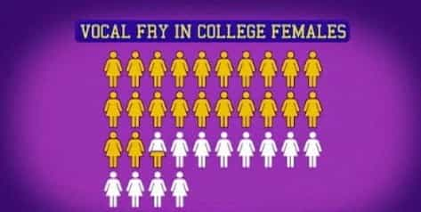
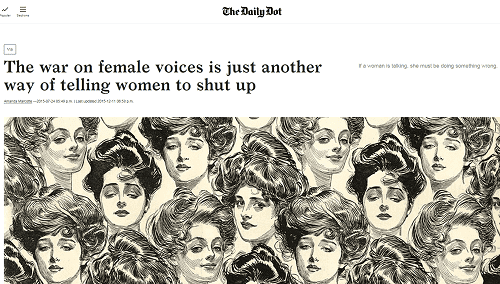

is an aspiring philosopher king, living the dream, travelling the world, hoarding FRNs and ignoring Americunts. He is a European at heart, lover of Latinas, and currently residing in the USA.


Over the Christmas holidays I turned on my radio, and NPR was playing a story about a mother who was on a quest to let her young toddler become a transvestite.
I heard a similar story a year ago, and reacted with shock and anger. This time, I merely laughed. Partly because I have become acclimated to hearing of such degeneracy, and partly because I can see so clearly how media is being used as a propaganda tool.
Tumblr Mania!
Sadly, this has thoroughly infected the American National Public Radio network, which used to be a good source of entertainment and information, free from commercial interests and able to explore unique ideas and topics without regard to their ability to sell advertising revenue. I can pinpoint exactly when this change began: 2004, and when it became overwhelming: 2016.
The starting point was the firing of Peabody Award winning Morning Edition host Bob Edwards in 2004. Edwards had joined the network in 1974, and just shy of his 25th anniversary with the popular morning news show, he was abruptly fired, with executives wanting a “younger, hipper” image (oddly enough, the 56 year old Edwards was quite popular among younger listeners).
Edwards with his wife Windsor Johnston
The network received over 50,000 letters in protest, more feedback than they had ever received on a single topic, presumably even more than the number who have written in to complain about transvestite toddler children stories. But nevertheless, Edwards was replaced.
What I remember about Edwards was his incredible talent as an interviewer, crafting intelligent and interesting questions, a skill that I find in no major media journalist I could name today; podcaster Joe Rogan comes close. He has a great skill of touching on a topic his guest is knowledgeable in, and drawing out interesting information that they would not otherwise discuss.
Edwards plays a vital part in his interviews, but is never the star. Unlike the long-winded modern reporters who love to hear the sound of their own voice, Edwards prefers to let his guest tell an interesting story, but draws out important points and seizes on new ideas that spring up in the conversation. He’s always educated and informed about his guest and the topic at hand.
Listening to Edward’s intelligent and curious questions is a sharp and painful contrast to the modern American press corps. Even when there is a major story at hand, the modern press will ask the most absurd, ridiculous, and self-evident questions.
I think you could take a stranger off the street, place them on the podium at a White House briefing, and they would be able to answer many of the poor questions the press poses.
Now, don’t get me wrong, the answers given by these PR schmucks are worse than the questions, and any press secretary of the past 20 years needs to be punched in the face and made to work in an outsourced substandard meat packing plant for the rest of his days.
In the most recent White House press conference, the journalists started off by asking the important question of what Donald Trump plans to do about a tranny bathroom in the White House. Yes, the national media who is charged with informing and spurring discussion amongst the 300 million Americans is concerned about the five trannies who may visit the White House this year and be confused about where to urinate. I’m sorry but I couldn’t continue watching. This is not a question an intelligent man would ever ask.
Edwards hosted an XM radio show for about a decade before finally retiring in 2015. After his departure, the staff and content of NPR gradually changed over the next decade, replacing career journalists with a passion for education and radio with millennial social justice warriors fresh out of college.
The old joke is that those who choose radio over television do so for a lack good looks– a “face for radio.” But in reality, radio hosts have an entirely different set of skills, the most important being voice quality. ROK has featured multiple articles on speaking deeply, and well, and the art of conversation. For decades, those who wanted to enter radio needed to develop excellent speaking skills. This includes a slow, clear, deep voice, with strong enunciation, articulate and precise speech patterns and vocabulary, and vocal range.
Listen to any popular radio host, and you will find this. The hosts speak clearly, slowly, and are easy to understand. Howard Stern has a deep voice and speaks carefully and clearly. So does Rush Limbaugh. The voice of Christian financial host Dave Ramsey is a bit more high pitched and nasal, but very easy to understand, and he speaks slowly and clearly. Put briefly, not everyone can make it in radio.
Until recently, one could tune in to most any program, and expect to hear a professional host, well-trained by a speech coach, who is skilled at communicating an idea auditorially. However, as the skin color, age, and sexual preference of the speaker became more important than their skills, standards have been thrown out the window and we have seen not only breaking of speech rules, but outright acceptance of poor speech patterns.

Vocal Fry is a low-pitched croaking sound made where the voice breaks or cracks during speech. It’s a speaking disorder, according to speech pathologists, but those who publicly criticize it can be labeled “attacking women.” Vocal fry is the opposite of femininity. Howard Stern discusses the phenomenon here.

Another extremely disturbing trend is the prevalence of sing-song speaking including ending the sentence with a higher pitch? As if the speaker is asking a question? When instead they are just making a statement? An example of vocal fry and uptalk is here. These speaking disorders are not only permitted, but they seem to be accepted, at least by radio producers. Listeners have reacted harshly, but criticism of poor speaking voices is seen as “female shaming” and shut down.
While females do seem to exhibit more of these annoying traits then men, I would posit that feminism has taught females they should be accepted for how they are, instead of working to improve themselves or develop a skill, and therefore most of these examples involve women.
Listening to a radio host with a speaking disorder is the equivalent of working out with a physically handicapped trainer.
Today, it is fairly common to hear anti-family, socially disruptive stories on the network, and the degree of unprofessionalism and emotion on behalf of some of the younger female hosts is unbearable.
What is the goal of these stories? Agitprop, or agitation propaganda, is a form of news or entertainment which exists primarily to spread a political or social message. In this case, a direct attack on masculinity, femininity, gender roles, authority, religion, and the family. In other words, an attack on the very heart of Western civilization. What do two thousand years of European history stand for, if not these values?
A story sexualizing pre-pubescent children perverts social norms and attacks religious values. A story reinforcing the idea that sex is a mental state, and not a biological fact perverts gender roles, and weakens both masculinity and femininity. A story that a mother should make an emotional decision about sex concerning her pre-sexual child is a direct attack on authority and family. And the entire story desensitizes us to degeneracy.
And what message are we giving new immigrants, tourists, and the rest of the world, who tune in to our national radio network and hear stories promoting gender reassignment surgery for children? Thankfully, most first generation immigrants are repulsed by this degeneracy, but their children typically accept it.
This is how a culture is shaped, and this is what we must target for change if we are to have a sane society in the future. Because a President Trump can last for only 8 years, and the next generation who don’t even know his name, is already growing up in a degenerate, agitprop atmosphere of social programming and third wave feminism.
If we don’t change that, the name Trump will just be another dead white guy in the history books to them. Return Of Kings and sites like it are leading the charge of combating this propaganda, and we have plans for much more in the future.
Read More: 5 Examples Of CNN’s “Fake News”